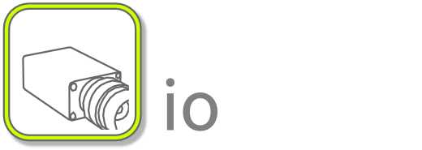
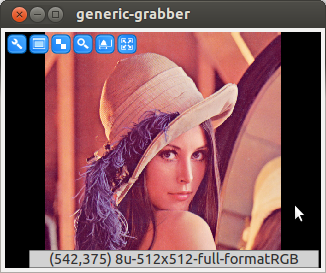

Image In- and Output¶
The ICLIO module contains functions and classes that support image in- and output. The package contains a large set of classes, that are actually not interesting for users. Therefore, only the relevant classes will be mentioned here. In particular, the IO module contains almost 40 implementations for the io::Grabber interface, but since only the io::GenericGrabber is to be used, all other classes are not discussed.
Table of Contents¶
The Generic Grabber¶
Even though, a large set of Grabber implementations is available, we strongly recommend to use instances of the io::GenericGrabber only. The GenericGrabber wraps all other supported Grabber implementations internally. At construction time, the GenericGrabber is set up with a pair of string parameters (usually specified on the application’s command line) that select which device has to use internally. By these means, you can simply write applications that are able to acquire images from all available image sources without having to check possibly supported back-ends manually. Furthermore, your application will also benefit from ICL-updates, which provide further grabber-implementations automatically, and the string-based device selection mechanism does also provide an elegant way to set grabber-properties from the command-line. Here is a small example for a dynamic-source grab example
|
 |
Device Selection from Command Line¶
A minimally adapted version of this application is available as an example application called ‘icl-viewer’. The program argument -input expects two sub-arguments, the backend-selector and the device selector In following examples you will see synergy of ICL’s program argument evaluation toolbox and the io::GenericGrabber
grab from the first fire-wire device available:
icl-viewer -input dc 0
grab from a file
icl-viewer -input file my-image.png
grab from a list of files (note, the pattern has be be set in single tics):
icl-viewer -input file 'images/*.jpg'
create the famous ‘lena’ demo image (also possible: ‘parrot’, ‘cameraman’ and others):
icl-viewer -input create lena
create an animated demo image (a moving red square):
icl-viewer -input demo 0
grab from a standad webcam using opencv:
icl-viewer -input cvcam 0
grab from a pylon compatible GigE device:
icl-viewer -input pylon 0
Adapting Camera Properties from Command Line¶
In addition to the simple device selection, also camera device properties can be set from command line. For this, a list of @property=value tokens is simply appended to the device-selector
force VGA size (this must be supported by the device):
icl-viewer -input dc 0@size=VGA
list all possible properties and their allowed values and ranges:
icl-viewer -input dc 0@info
instantiate a grabber and directly load a property configuration file (note: these files can be created interactively with the camera-configuration tool icl-camera-config or by reading a devices properties using e.g. icl-camera-param-io -d dc 0 -o my-file.xml):
icl-viewer -input dc 0@load=my-file.xml
set several options at once:
icl-viewer -input kinectc '0@LED=green@format=IR Image (10Bit)'
enable image undistortion according to undistortion parameters stored in an appropriate xml file:
icl-camviewer -input dc 0=my-udist-properties.xml
create a remote server for the camera properties so that an external application that receives the images can also adapt the grabber properties (only with RSB-Support):
icl-pipe -i v4l 0@remote-server=/foo/bar/cfg -o rsb /foo/bar
The opposite receiving part then can instantiate a remote client:
icl-viewer -i rsb /foo/bar@remote-client=/foo/bar/cfg
Note
appropriate means that the xml-file was created by either serializing an io::ImageUndistortion structure to a file, or by using ICL’s tool for the estimation of lens distortion compensation parameters: icl-opencv-calib. The use of this tool is explained in detail in Image Undistortion (Lens distortion correction)
Adapting Camera Properties Remotely¶
When streaming images between processes, a particular difficulty is the adaption of native camera parameters from the receiving (auctually processing) process. Let’s say, an image server process is created in one process:
icl-pipe -i v4l 0 -o rsb /foo/bar
that here streams images from the first v4l device through an rsb-informer. Now an actuall application, that receives (and processes) the images, such as:
icl-viewer -i rsb /foo/bar
would only be able to adapt the here locally used RSB-grabber’s properties, which basically only allow to adjust image compression parameters. This mechanism is internally realized by a property feedback channel that is automatically spawned by the io::GenericImageOutput instance, which is created in the icl-pipe process. Though this channel, the io::GenericGrabber that is created in the icl-viewer process can tell the io::GenericImageOutput of the icl-pipe-process how and how much the images should be compressed. The actuall video-4-linux camera properties, however, are only visible in the icl-pipe process.
ICL’s io::GenericGrabber provides a generic method to forward the actual device properties also to the client (icl-viewer) side. To this end, the sending process must be explicitly told to create an RSB-remote-server for its grabbers properties:
icl-pipe -i v4l 0 -o rsb /foo/bar@remote-server=/baz
Now, client processes, such as icl-viewer, can access these properties (if needed) by instantiating a remote-client:
icl-viewer -i rsb /foo/bar@remote-client=/baz
In this case, the RSB-grabber in the icl-viewer process would not only provide access to the native RSB-grabber properties, but also to all properties of the v4l-Grabber that is used in the icl-pipe process. Please note:
The remotely connected properties are endowed with a "remote."-prefix.
List of Supported Grabber Backends¶
Each ICL-application that is implemented using a combination of program argument and the GenericGrabber, is able to provide a list of all currently supported backends and how to understand their specific device-selector. Simple write e.g.:
icl-viewer -input list all
A full list would currently contain the following, the library dependencies are not part of automatically created list.
| index | ID | parameter | description | library dependency |
|---|---|---|---|---|
| 0 | kinectd | device ID | kinect depth camera source | libfreenect |
| 1 | kinectc | device ID | kinect color camera source | libfreenect |
| 2 | kinecti | devide ID | kinect IR camera source | libfreenect |
| 3 | v4l | /dev/videoX index or device-file | V4l2 based camera source | videodev-headers or libv4l |
| 4 | dc | camera ID or unique ID | IEEE-1394a based camera source (FireWire 400) | libdc1394 |
| 5 | dc800 | camera ID or unique ID | IEEE-1394b based camera source (FireWire 800) | libdc1394 |
| 6 | sr | device Index or -1 for auto select | Mesa Imaging SwissRanger depth camera source | libmesasr |
| 7 | xine | video filename | Xine library based video file source | libxine |
| 8 | cvvideo | video filename | OpenCV based video file source | OpenCV >= 2.3 |
| 9 | cvcam | camera ID | OpenCV based camera source | OpenCV >= 2.3 |
| 10 | sm | shared memory segment name | Qt-based shared memory source | Qt |
| 11 | pylon | camera ID ?? or IP-address | Basler Pylon based gigabit-ethernet (GIG-E) camera source | Basler Pylon and Genicam libs |
| 12 | rsb | [comma sep. transport list=spread]:scope | Robotics Service Bus based image source | librsbcore librsc |
| 13 | file | file name or file-pattern (in ‘’) | image source for single or a list of image files | imagemagic, libpng, libjpeg |
| 14 | demo | 0 | demo image source | – |
| 15 | create | parrot|lena|cameraman|mandril | everywhere available test images source | libjpeg |
| 16 | oni | depth|rgb|ir | OpenNI-based depth camera grabber for Kinect and X-tion | OpenNI |
| 17 | optris | camera serial | libIRImager based backend for Optris’ IR Cameras | libirimager, v4l2, udev |
Supported Image File Types¶
ICL supports a huge variety of image file types. Some of them are supported natively, i.e. no extra library is necessary. Most of the formats do not support to load and save image meta data and icl-specific image features such as the region of interest.
Natively supported Image Types
- ppm, pgm and pnm are supported as a common, simple and uncompressed image format
- csv comma separated value files can also be read natively
- icl a first pnm-like data format
- bicl and jicl the new common icl-specific data types, which supports all image properties, including image meta-data. The jicl format is uses jpeg-compression internally, while bicl stored the image data in a binary manner, but uncompressed
- rle1, rle4, rle6, and rle8 is also an icl-specific format that is in particular well suited for binary images. The formats use run length encoding, where for each format, a certain number of bits is used for encoding a pixel value. I.e. rle1 uses 1 bit for the pixel value, and is therefore only able to represent binary images. However in case of binary images, the maximum run length is defined by the remaining 7 bits (128), which usually leads to a very high loss-less compression ratio. The rle4 format is able to represent 16 different gray-values, however its theoretical maximum compression is much less, and this effect is even stronger for rle6, which can distinguish up to 64 gray values, which is usually enough for visualization. The rle8 format works slightly differently, because it uses two bytes – 16bits – for each run-token. Therefore, it is loss-less for common Img8u source images, but still providing a maximum run length of 256, which leads to a very high compression for homogeneous binary image regions. The rle-type also support loading and saving of all other image properties, including meta-data.
Image Files that need External Libraries
.gz for each natively supported file suffix also a suffix.gz- version is supported, which simply writes the files with zlib. Even though, this is rather slow, it can sometimes provide good loss-less image compression
jpeg is supported if ICL has libjpeg or image-magick support, or
png is supported if ICL has png or image-magick support
if image-magick is supported, also all file-types are supported, that can be tacked by image magick. A list of file types supported by image magick can be obtained from command line using:
identify -list format
The Generic Image Output¶
The io::GenericImageOutput works very similar to the io::GenericGrabber, however in an opposite direction. It has a single method called GenericImageOutput::send:
1 2 3 4 5 6 7 8 9 10 11 12 13 14 15 16 17 18 19 20 | #include <ICLQt/Common.h>
#include <ICLIO/GenericImageOutput.h>
GUI gui;
GenericGrabber grabber;
GenericImageOutput out;
void init(){
grabber.init(pa("-i"));
out.init(pa("-o"));
gui << Image().handle("image") << Show();
}
void run(){
const ImgBase *image = grabber.grab();
gui["image"] = image;
out.send(image);
}
int main(int n, char **args){
return ICLApp(n,args,"-input|-i(2) -output|-o(2)",init,run).exec();
}
|
Output Selection from Command Line¶
Since almost all ICL-applications use the io::GenericGrabber in combination with ICL’s programm argument evaluation toolbox, nearly all ICL applications can be set up to grab their source images from an arbitrary image source. In this context, the application icl-pipe might be very useful: icl-pipe does not only have a generic image souce, but is does also uses the io::GenericImageOutput to stream the grabbed images somewhere else. Here are some examples:
grab images from dc camera and dump the results into files (#### is replaced by the image index, here 0000, 0001, … for more ore less trailing zeros, just add more or less hashes #):
icl-pipe -input dc 0 -o file images/image-####.ppm
grab images and pipe them to a shared memory segment which can directly be accessed by other ICL applications:
icl-pipe -input dc 0 -o sm my-segment
now, the images can be read online from the shared memory:
icl-viewer -input sm my-segment
capture a video using an opencv based video writer (here, with DIVX codec, VGA-resolution and playback speed of 24 frames per second (note, not all combinations of codecs, resolutions and sizes are possible, actually, most are not :-):
icl-pipe -input dc 0 -o video my-video.avi,DIVX,VGA,24
re-encode a video using a xine-based grabber:
icl-pipe -input video some-file.mpg -o some-file-converted,DIVX,SVGA,30
grab images from a robotics service bus scope /foo/bar (using spread-based multicast connection):
icl-camviewer -input rsb /foo/bar
grab images from a robotics service bus scope /foo/bar (using socket connection):
icl-camviewer -input rsb socket:/foo/bar
grab video file and use a robotics service bus informer to publish the image via spread and socket simultaneously:
icl-pipe -input cvvideo myfile.avi -o rsb spread,socket:/foo/bar
List of Supported Output Backends¶
Just like the GenericGrabber also the GenericImageOutput can be used to query a list of supported backends from the command line. Of course, we need an application, that uses the GenericImageOutput in combination with ICL’s program argument evaluation environtment, such as icl-pipe:
icl-pipe -i demo 0 -o list all
A complete list looks like this, and again, we added a column for the library dependency:
| nr | id | parameters | explanation | library dependency |
|---|---|---|---|---|
| 0 | video | video filename | OpenCV based video file writer | OpenCV >= 2.3 |
| 1 | sm | shared memory segment ID | Qt based shared memory writer | Qt |
| 2 | rsb | [transports=spread]:scope | Network output stream | librsbcore, librsc |
| 3 | file | file pattern in tics ‘’ | File Writer | optionally, libjpeg, … |
| 4 | v4l | device name or id | V4L2 looback device writer | videodev-headers or libv4l |
The ColorFormatDecoder¶
The io::ColorFormatDecoder is closely connected to the io::FourCC utility class. Its ColorFormatDecoder::decode function is able to decode commonly encoded images. Here, the data is represented by a single data pointer (in shape of a const icl8u *), and the color format is specified by an also passed FourCC instance. Currently, the following FourCC codes are supported
GRAY, GREY and Y800
are all the same simple row-major byte gray scale images
YUYV, Y444, YU12
YUV sub-formats
MJPE
Motion jpeg
MYRM
Customly defined fourcc value for the Myrmex tactile device designed by Carsten Schürmann
Note
Whenever a new V4L2 camera provides an unrecognized color format, support for this format must be added to the ColorFormatDecoder
Intrinsic Camera Calibration¶
Intrinsic camera calibration basically consists of two parts:
- Estimation of paramerters for removing lens-distortion artifacts
- Estimation of projective camera prameters (focal-length, principal-point offset and skew)
ICL assumes that these two steps are conceptually separated. We solve and apply lens-undistortion before all further processing steps. Thus, the more or less distorted camera image is used to compute lens-undistortion parameters using the very common 5 parameter model that is also used by OpenCV’s intrinsic calibration tool and by matlab. Once, these parameters are known, lens-undistortion is performed per-pixel (internally efficiently optimized using a warp-table) on an application’s internal input image. Therefore, the application can then simply assume a non-distorted camera image so that the linear pinhole camera model completely describes the camera projection.
Details, examples and a step-by-step description is given in Camera Calibration.
Other Classes¶
These are used at several locations. First of all for reading and writing jpeg images, but also shared-memory- and rsb-based inter process communication can be optimized using jpeg compression. The decoder is also used for motion-jpeg decoding.
The file list can be used to expand bash-style file patterns, such as “images/*.png”. Once instantiated, the file list provides lexicographically ordered random access to the matching files. Usually, this must not be used manually, as it is automatically used if the GenericGrabber is instantiated with a “file” backend selector.
The FilenameGenerator allows for creating incremental file-names such as “image-001.png”, “image-002.png”, etc. For this, a given pattern string must contain a connected set of hashes (e.g. “image-###.png”). The more hashes are used, the more trailing zeros are inserted
The image compressor is used to create the binary ICL image formats bicl, jicl and also the rleX-formats. Actually its image serialization is also used for shared-memory- and rsb-based network communication